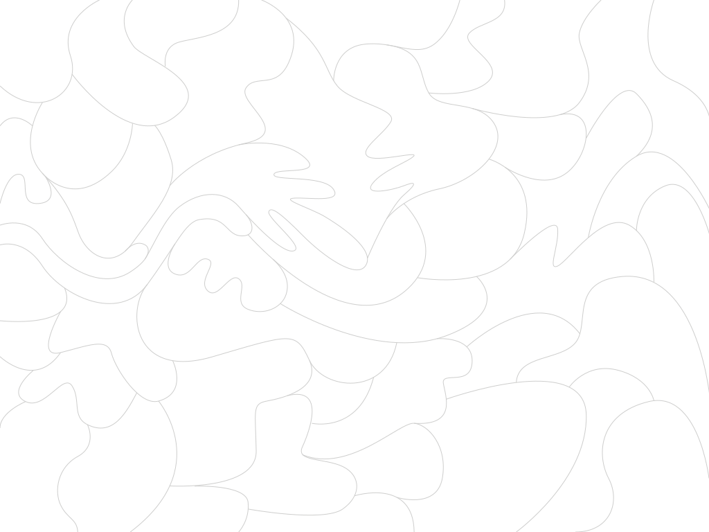

<html>
  <head>
    <script type="text/javascript" src="paperjs/dist/paper-full.min.js"></script>
    <script type="text/paperscript" canvas="canvas">
     var values = {
       paths: 50,
       minPoints: 3,
       maxPoints: 10,
       minRadius: 30,
       maxRadius: 90
     };

     var hitOptions = {
       segments: true,
       stroke: true,
       fill: true,
       tolerance: 5
     };

     var cfg = {
       minPathDelta: 0.2,
       maxPathDelta: 0.5,
       minPathPoints: 3,
       maxPathPoints: 7,
       minDecal: 30,
       maxDecal: 200,
     };

     var front = new Path();
     front.add(new Point(100, 0));
     front.add(new Point(100, 300));
     front.strokeColor = 'black';

     do {
       var t1 = rand(0, 1);
       var t2 = rand(t1 + cfg.minPathDelta, t1 + cfg.maxPathDelta);
     } 
     while (t2 > 1 || t2 - t1 > cfg.maxPathDelta);

     var p1 = front.getPointAt(t1, true);
     var p2 = front.getPointAt(t2, true);

     var nPoints = Math.floor(rand(cfg.minPathPoints, cfg.maxPathPoints));

     var b = front.bounds;

     var points = [p1]
     for (var i = 0; i < nPoints; i++) {
       var x = b.bottomRight.x + rand(cfg.minDecal, cfg.maxDecal);
       //var y = rand(b.topRight.y, b.bottomRight.y);
       var y = rand(p1.y, p2.y)
       var p = new Point(x, y);
       smallCircle(p);
       points.push(p);
     }
     points.push(p2);

     points.sort(function(a, b){
       var ka = a.y;
       var kb = b.y;
       // Compare the 2 dates
       if(ka < kb) return -1;
       if(ka > kb) return 1;
       return 0;
     });

     var p = new Path();
     for (var i = 0; i < points.length; i++) {
       p.add(points[i]);
     }
     p.strokeColor = 'green';
     p.smooth();
     // p.simplify();

     smallCircle(p1);
     smallCircle(p2);

     var ofront1 = front.clone();
     //ofront1.strokeWidth = 3;
     var ofront2 = front.clone();

     var after = ofront1.split(ofront1.getLocationAt(t1, true));
     var before = ofront1;

     before.join(p);
     front = before;


     var after = ofront2.split(ofront2.getLocationAt(t2, true));
     var before = ofront2;

     front.join(after);
     front.selected = true;


     function rand(a, b) {
       var x = Math.random();
       return a*x + b*(1-x);
     }

     function smallCircle(point) {
       var c = new Path.Circle(point, 5);
       c.strokeColor = 'blue';
     }
       

     // createPaths();

     function createPaths() {
       var radiusDelta = values.maxRadius - values.minRadius;
       var pointsDelta = values.maxPoints - values.minPoints;
       for (var i = 0; i < values.paths; i++) {
     	 var radius = values.minRadius + Math.random() * radiusDelta;
     	 var points = values.minPoints + Math.floor(Math.random() * pointsDelta);
     	 var path = createBlob(view.size * Point.random(), radius, points);
     	 var lightness = (Math.random() - 0.5) * 0.74 + 0.4;
     	 var hue = Math.random() * 360;
     	 path.fillColor = { hue: hue, saturation: 1, lightness: lightness };
     	 path.strokeColor = 'black';
       };
     }

     function createBlob(center, maxRadius, points) {
       var path = new Path();
       path.closed = true;
       for (var i = 0; i < points; i++) {
     	 var delta = new Point({
     	   length: (maxRadius * 0.5) + (Math.random() * maxRadius * 0.5),
     	   angle: (360 / points) * i
     	 });
     	 path.add(center + delta);
       }
       path.smooth();
       return path;
     }

    </script>
  </head>
  <body>
    <canvas id="canvas" resize></canvas>
    <!--  -->
    </div>
  </body>

</html>
